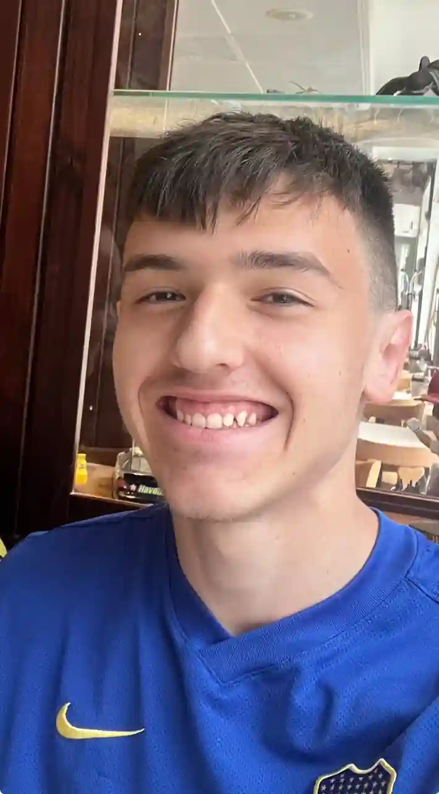

Forside
Dette er et portfolio website, som indeholder hele min process igennem mit første semester på KEA Multimediedesigner uddannelsen. Øverst til højre kan man navigere rundt mellem de 4 forskellige temaer, som jeg har været igennem.
Om mig
Mit navn er Sebastian Robert Mentzel Jeg hedder Sebastian, og jeg studerer på Multimediedesigner uddannelsen, fordi jeg er kreativ og interesserer mig at tegne, redigere videoer og håber på at kunne være med til at lave spil/film i fremtiden ved brug af mine kreative evner. Jeg er kæmpe fan af Marvel og DC, så det er der, hvor størstedelen af min inspiration til min kreativitet udspringer fra. Det er netop grunden til, at jeg startede med at tegne og redigere videoer til at begynde med. Samtidig spiller jeg klubfodbold og har gjort det siden jeg var 9 år.